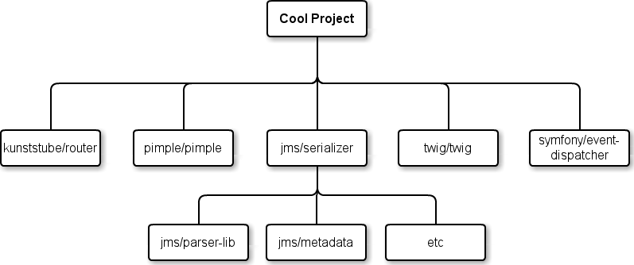

Introduction à Composer

L'ordre du jour
- Gestion de dépendances
- Présentation de Composer
Le projet

Et maintenant ?
Dependency Hell
Répétez pour chacune des dépendances :
- Où la trouver ?
- Quelles sont ses dépendances ? Lesquelles sont nécessaires ?
- Comment et où installer le tout ?
- Gestion de l'autoloading
- Version de la dépendance
Solutions
Pear
- installation globale
- channels (channel1/package !== channel2/package)
- impossible de figer des dépendances
- gestion des dépendances assez douteuse
Submodules
- dépendances des dépendances ?
- pas super pratique
Composer
En bref
- installation simple
- dépendances propres au projet
- résolution efficace des versions des dépendances (solver SAT)
- plus quelques bonus
Behind the scenes
- composer.json : description des dépendances
- composer.lock : image exacte d'une installation
- Packagist, satis : sources de packages
Installation
$ curl -sS https://getcomposer.org/installer | php
composer.json
{
"require": {
"pimple/pimple": "1.*",
"symfony/event-dispatcher": "2.1.*",
"kunststube/router": "dev-master",
"symfony/yaml": "2.1.*",
"twig/twig": "1.*",
"jms/serializer": ">=0.8.0,<=0.11.0"
},
"autoload": {
"psr-0": {
"": "src/"
}
}
}
% php composer.phar install
Loading composer repositories with package information
Installing dependencies (including require-dev) from lock file
- Installing pimple/pimple (v1.0.2)
Downloading: 100%
- Installing twig/twig (v1.12.2)
Downloading: 100%
- Installing symfony/yaml (v2.1.8)
Downloading: 100%
[...]
Generating autoload files
.
├── [...]
├── composer.json
├── composer.lock
└── vendor
├── autoload.php
├── [...]
├── kunststube
│ └── router
├── pimple
│ └── pimple
├── symfony
│ ├── event-dispatcher
│ └── yaml
└── twig
└── twig
Autoloading
require 'vendor/autoload.php';Dans un bootstrap de tests :
$loader = require 'vendor/autoload.php';
$loader->add('Acme\\Test\\', __DIR__);
Commandes utiles
- install : lit composer.lock et installe les dépendances
-
update :
- lit composer.json
- vérifie les dépendances
- installe/met à jour et maintient composer.lock
-
require
- ajoute une entrée dans composer.json
- vérifie les dépendances
- installe et maintient composer.lock
Quelques conseils
- composer.phar à jour
php composer.phar --prefer-dist --optimize-autoloaderpour les déploiements- update <package>
- .gitignore
Pour aller plus loin
- stability flags
- dev requirements
- scripts
- Platform packages (version de PHP, extensions)